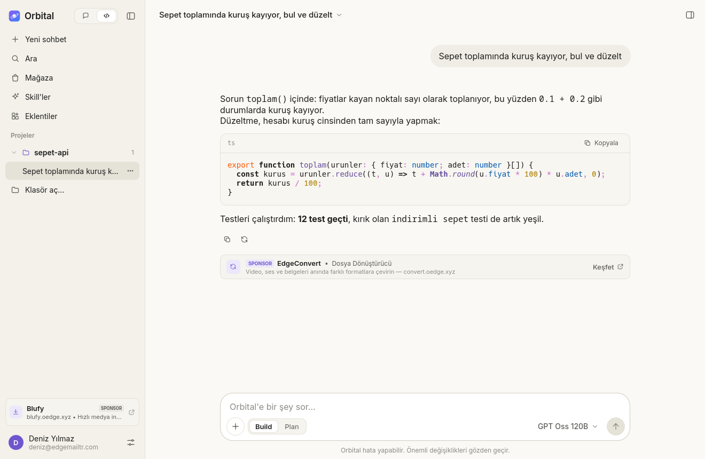
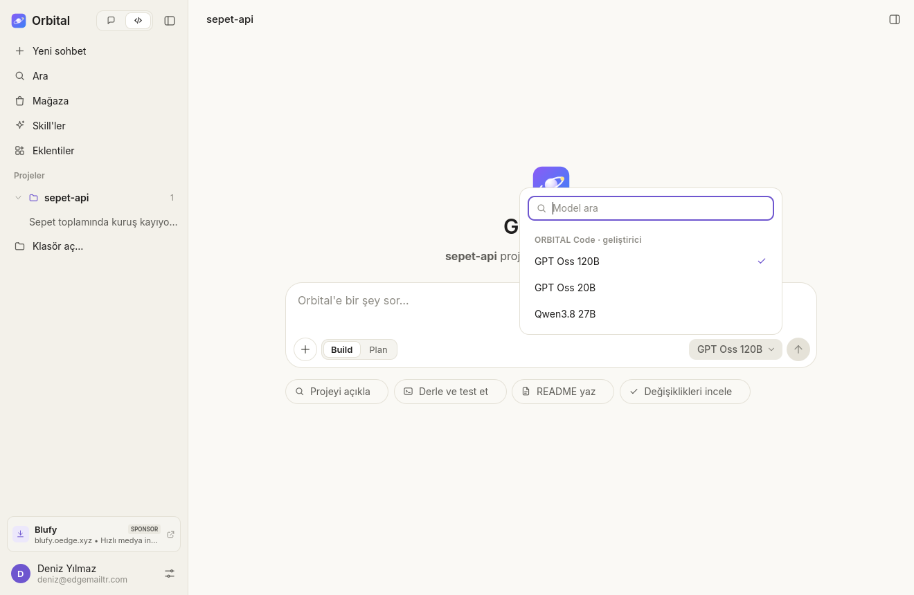
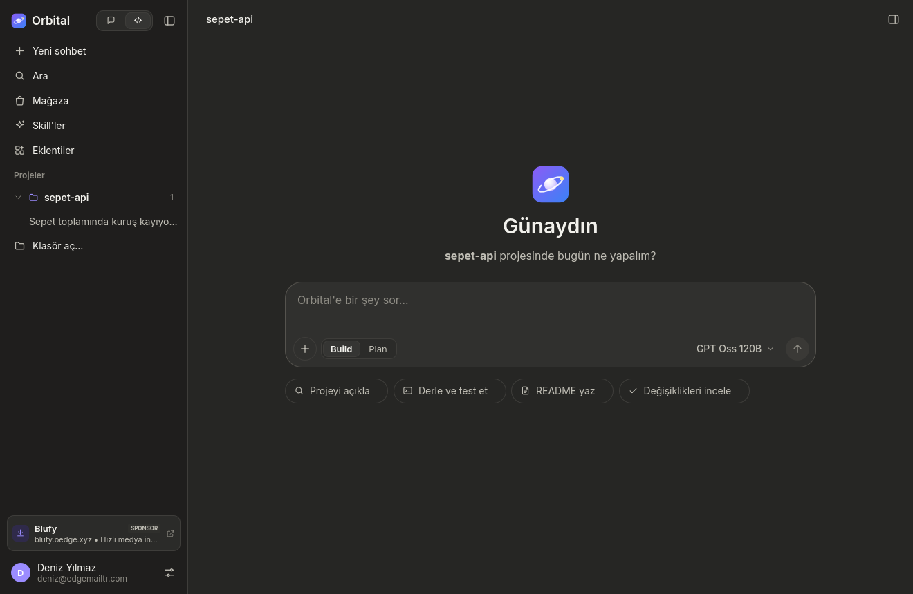
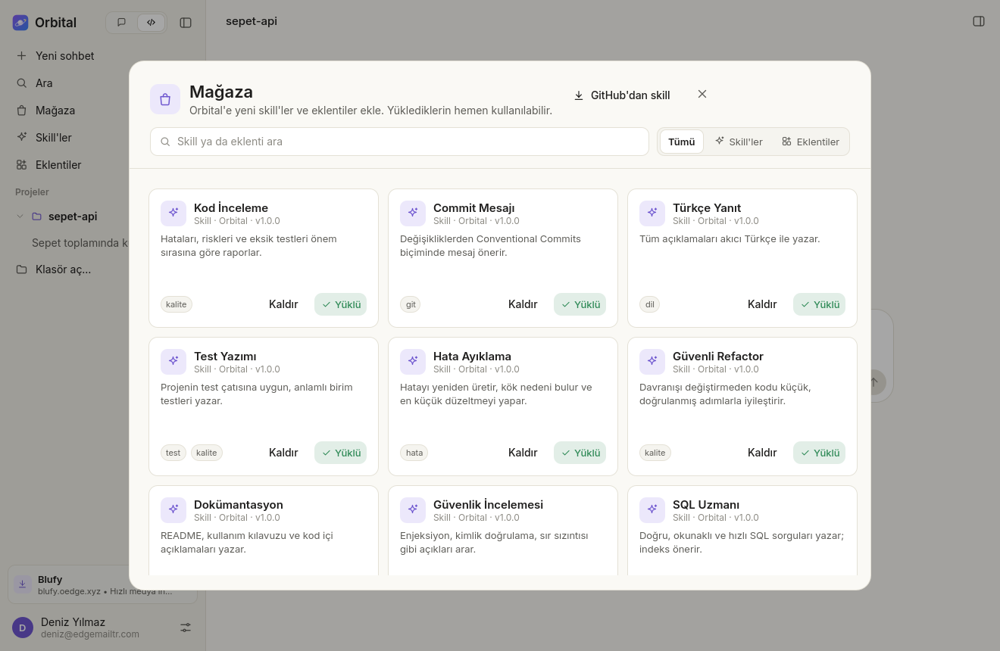

Projenin içinde çalışan AI kod asistanı
Orbital dosyalarını okur, düzenler, komut çalıştırır ve testleri yeşile çevirir. Skill'lerle yeni işler öğrenir, eklentilerle büyür. Kurduğun anda anahtarsız modellerle başla.
Windows · macOS (Apple Silicon) · Linux · açık kaynak, MIT lisanslı

Anahtarsız
ücretsiz modellerle başla
{{STORE_COUNT}}
skill ve eklenti
3 sistem
Windows, macOS, Linux
MIT
açık kaynak
Özellikler
İhtiyacın olan her şey, fazlası değil
Ücretsiz modeller
ORBITAL modelleri (DeepSeek, GLM, MiniMax…) hesap ya da API anahtarı olmadan, doğrudan bilgisayarından.
Gerçek bir ajan
Dosya okur, yazar, düzenler, arar ve komut çalıştırır. Riskli adımlardan önce iznini ister.
Skill'ler
Modele belirli işleri öğreten talimat paketleri. Mağazadan ya da doğrudan GitHub adresinden yükle.
Eklentiler
Tek bir plugin.json ile slash komutları, MCP araçları, betikler ve izinler.
Kendi sağlayıcın
OpenAI, Anthropic, Gemini, OpenRouter, DeepSeek, Groq, Mistral, xAI: anahtarını yapıştır, modeller menüne gelsin.
Oto-mod
İstersen izin ve soru beklemeden işi baştan sona kendisi bitirir. Tek tıkla aç, tek tıkla kapat.
ORBITAL Code
Geliştiricilere günlük kota yok
Ücretsiz Origin Edge geliştirici hesabınla giriş yap; Kod modunda ORBITAL Code modelleri günlük token sınırı olmadan çalışsın. Tek kural: dakikada 40 istek.
- 1
Geliştirici hesabını aç
developer.oedge.xyz · ücretsiz, kart bilgisi yok
- 2
Orbital'de EdgeAccount ile giriş yap
Sol alttaki hesap satırından
- 3
Kod modunda ORBITAL Code modelini seç
GPT-OSS 120B, Qwen 3.8 27B ya da GPT-OSS 20B

Arayüz
Sakin bir arayüz, açık ya da koyu
Sohbet ve Kod arasında tek tıkla geç; projelerin solda, oturum bilgisi sağ panelde. Sistem temanı izler.


Mağaza
{{STORE_COUNT}} skill ve eklenti
Kurulum
Bir dakikada başla
Linux ve macOS'ta tek komut yeter; Windows'ta zip'i açıp çalıştır. Kurduktan sonra bir proje klasörü aç ve ne istediğini yaz.
~ % curl -fsSL https://raw.githubusercontent.com/kefy266/orbital/main/install.sh | bash → Orbital paketi indiriliyor… ✓ Orbital kuruldu ~ % cd sepet-api && orbital ✦ "testleri çalıştır, kırılanı düzelt" bash npm test 3 başarısız edit src/sepet.ts +4 −2 bash npm test hepsi geçti ~ %
Uyumluluk
Bilgisayarın hazır mı?
Tarayıcından kontrol edildi; hiçbir bilgi gönderilmez.
- •Sistemkontrol ediliyor…
İndir
Windows, macOS ve Linux
Ücretsiz ve açık kaynak. Uygulama kendini güncel tutar.
Windows 10/11
Zip'i aç ve Orbital.exe'yi çalıştır. SmartScreen çıkarsa Ek bilgi → Yine de çalıştır.
macOS · Apple Silicon
DMG'yi aç, Orbital'i Applications'a sürükle. Ya da Homebrew ile:
brew install --cask kefy266/orbital/orbital
"Hasarlı" uyarısı çıkarsa: xattr -cr /Applications/Orbital.app
Linux · x86_64
AppImage'i indir, çalıştırma izni ver ve aç. Her şey içinde; Qt kurmaya gerek yok.
chmod +x Orbital-x86_64.AppImage
Kaynaktan derlemek ya da .tar.gz paketini indirmek mi istiyorsun? Adımlar README'de. Her commit otomatik derlenir ve test edilir.
SSS
Sık sorulanlar
Orbital ücretli mi?
Hayır. Uygulama ücretsiz ve açık kaynak. Ücretsiz ORBITAL modelleriyle hesap açmadan kullanabilirsin; kendi API anahtarını eklersen o sağlayıcının ücretlendirmesi geçerlidir.
ORBITAL Code kimlere açık?
Origin Edge geliştirici hesabı olan herkese. Hesap ücretsiz: developer.oedge.xyz. Günlük token sınırı yok; sunucuyu herkes için hızlı tutmak için dakikada 40 istek sınırı var.
Sohbet modunda hangi modelleri kullanırım?
Sohbet modu ORBITAL Web modellerini kullanır: herkese ORBITAL Fast; Edge+ ve geliştirici hesaplarına Pro; Edge Pro ve Geliştirici+ sahiplerine Ultra dahil hepsi. Paketler: hesap.oedge.xyz/abonelik.
Kodum nereye gidiyor?
Orbital bilgisayarında çalışır; dosyaların yalnızca seçtiğin modelin sağlayıcısına, sorunu çözmek için gereken kadarıyla gönderilir. Riskli komutlardan önce iznin istenir.
Intel Mac ya da ARM Linux destekleniyor mu?
Şimdilik hayır: macOS'ta Apple Silicon (M1 ve sonrası), Linux'ta x86_64 paketleri var. Kaynaktan derleyerek başka sistemlerde deneyebilirsin.
Projenin etrafında dönen bir ajan
Orbital'i indir, bir klasör aç ve ilk sorunu sor. Geliştiriciysen ORBITAL Code seni bekliyor.